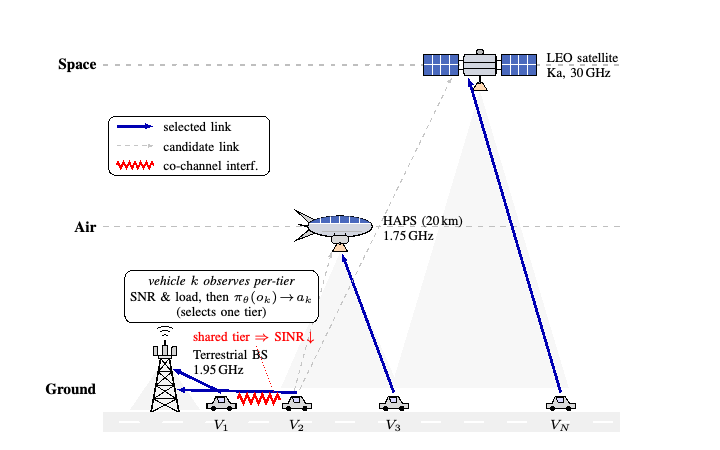
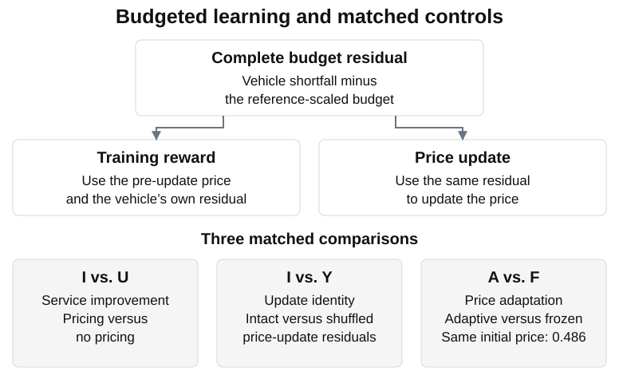
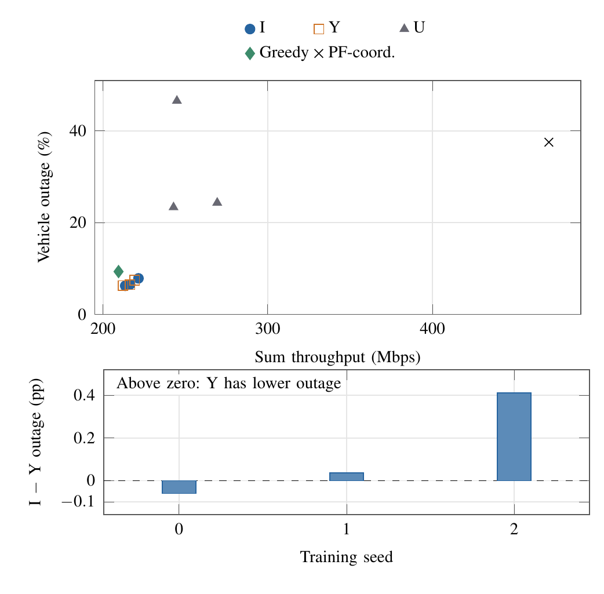
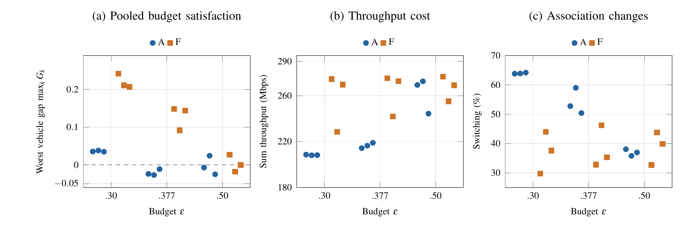

Causally Tested QoS-Floor Constraints for Decentralized SAGIN Access Association
1Waseda University 2Norwegian University of Science and Technology


Overview
This work develops a QoS pricing approach for decentralized vehicle access association in space–air–ground integrated networks. It incorporates per-vehicle expected-shortfall budgets to improve short-term service and uses matched control experiments to examine the role of price feedback, identifying when adaptation helps and the associated throughput and switching trade-offs.
Method
The approach incorporates per-vehicle expected-shortfall budgets into centralized training with decentralized execution. Training rewards and price updates use the same budget residual. Matched controls compare pricing with no pricing, intact with shuffled residual updates, and adaptive with frozen prices initialized at the same value.


Results
Across three training seeds with 12 vehicles, the shortfall-budgeted approach reduced outage by 66.3–86.0% relative to unconstrained MAPPO and increased the mean instantaneous minimum rate from 0.0116 to 0.2097 Mbps. Matched controls showed that service gains persisted under shuffled residual updates, while adaptive-versus-frozen comparisons identified budget-dependent benefits of price adaptation. The results demonstrate substantial short-term service improvements and clarify the associated throughput and switching trade-offs.




| Method | Sum throughput (Mbps) | Mean instantaneous minimum (Mbps) | Outage (%) | Switch (%) |
|---|---|---|---|---|
| Intact pricing (I) | 217.16 | 0.2097 | 6.88 | 53.98 |
| Shuffled residual updates (Y) | 215.88 | 0.2134 | 6.75 | 54.23 |
| Unconstrained (U) | 252.34 | 0.0116 | 31.42 | 30.11 |
| Greedy-SNR | 209.44 | 0.1599 | 9.34 | 58.51 |
| PF-coordinate | 470.66 | 0.0080 | 37.54 | 61.53 |
Source: revised author manuscript, Table II. I/Y/U values are means over three training seeds at the fixed 100k-step endpoint; each heuristic is evaluated for 10,000 slots without training-seed replication. Outage threshold: 0.1 Mbps. PF-coordinate uses global channel information and is not a same-information baseline. Switching counts association-selection changes, including reset actions, rather than modeled physical handover costs. The evaluation pool was reused during development, not reserved as an unseen final test. Expected-shortfall budgets do not provide hard per-slot QoS guarantees.